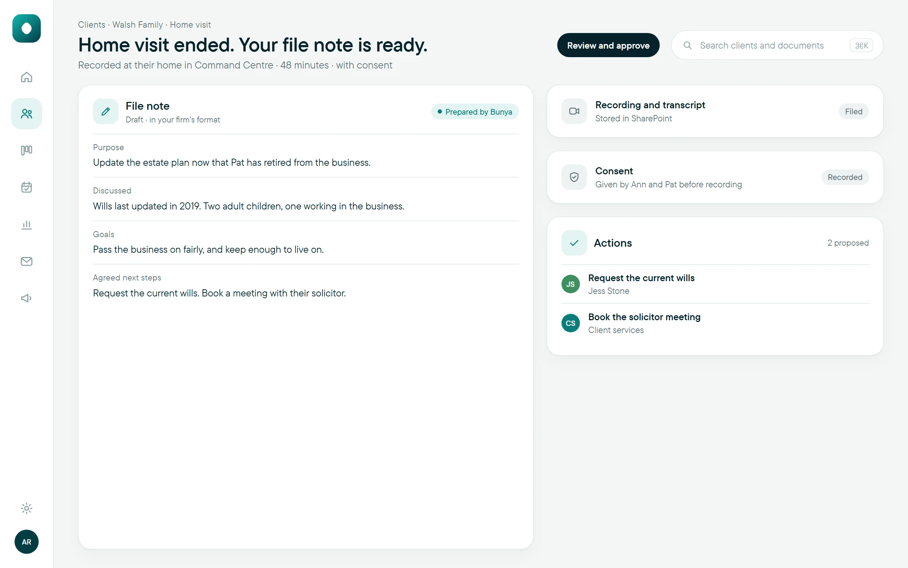
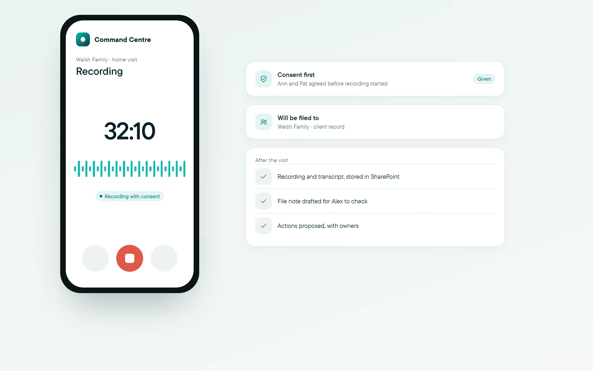
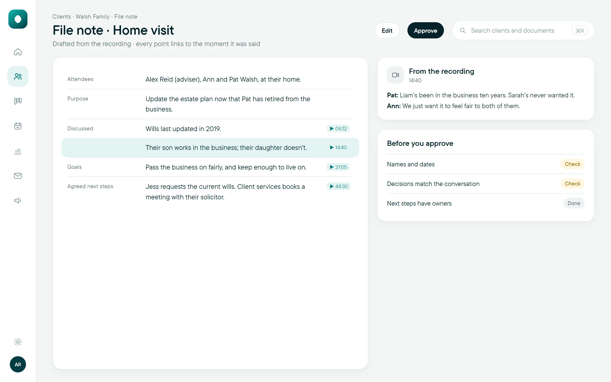
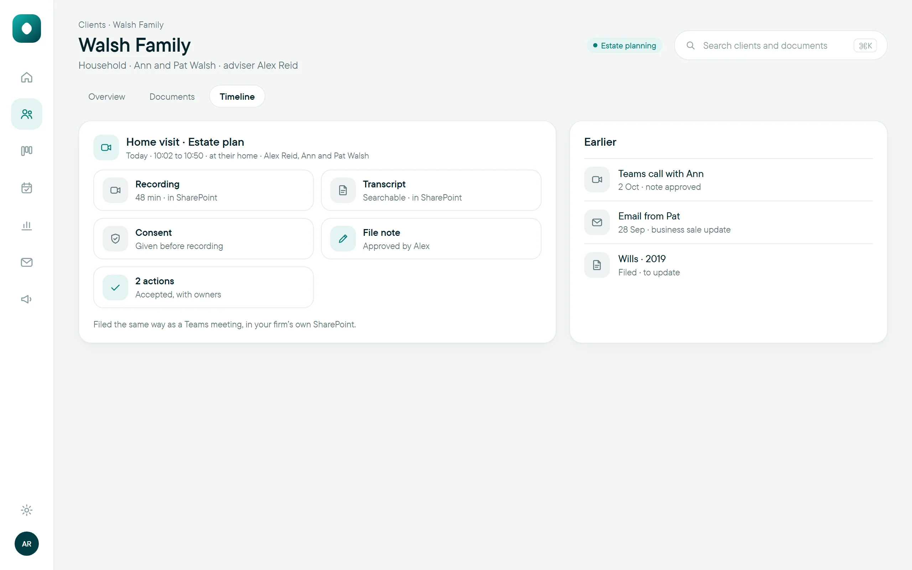

Field NotesMeetings anywhere, noted.
An onsite recorder for meetings away from the office.
$19 a month. Draft prices, A$ ex GST.Works inside your Microsoft 365SharePoint

Record meetings at the client’s home or business, right in Command Centre.
Captured with the client’s consent.
Stored in SharePoint and filed to the client like any other meeting.
How it works
- 1Consent
The client agrees before anything is recorded.
- 2Record
The meeting is recorded in Command Centre, wherever it happens.
- 3Drafted
A file note and actions, ready for the adviser to check.
- 4Filed
Recording and approved note, stored in SharePoint with the client.
Works with Command Centre, SharePoint, Meeting Notes and the client record.
Up close



Record a meeting at the client’s home or business, right in Command Centre, once they’ve agreed.
Today, and with Field Notes
What’s included
Questions
How is it different from Meeting Notes?
Meeting Notes covers Teams meetings and calls. Field Notes covers meetings in person, away from the office, and files them the same way.
Is the client’s consent captured?
Yes. Nothing is recorded until the client has agreed.
Goes well with
Field Notes, ready when you are.
$19 a month.